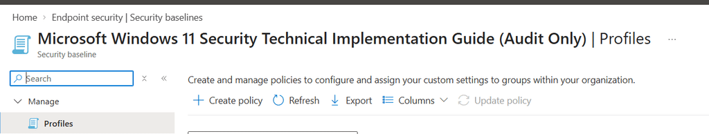
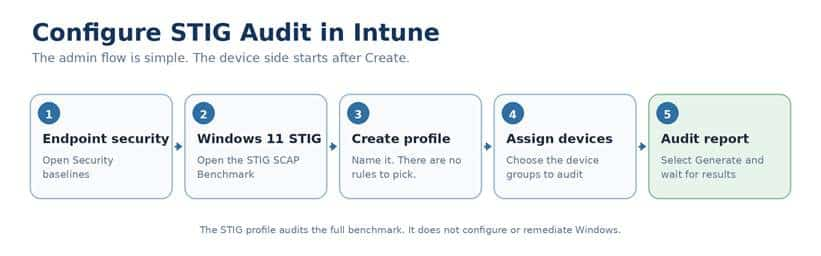
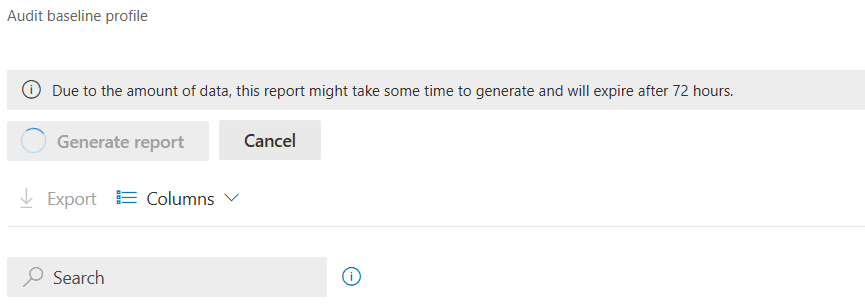
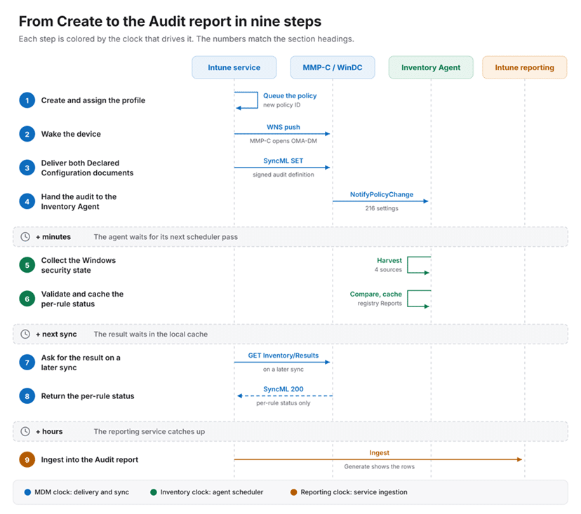
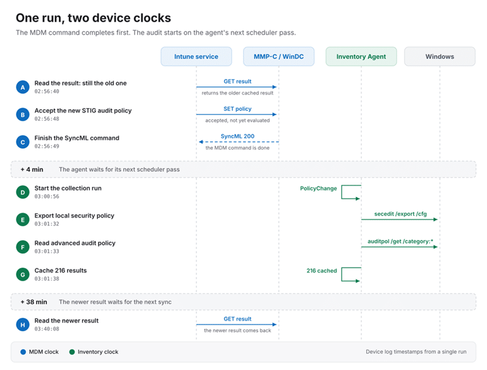
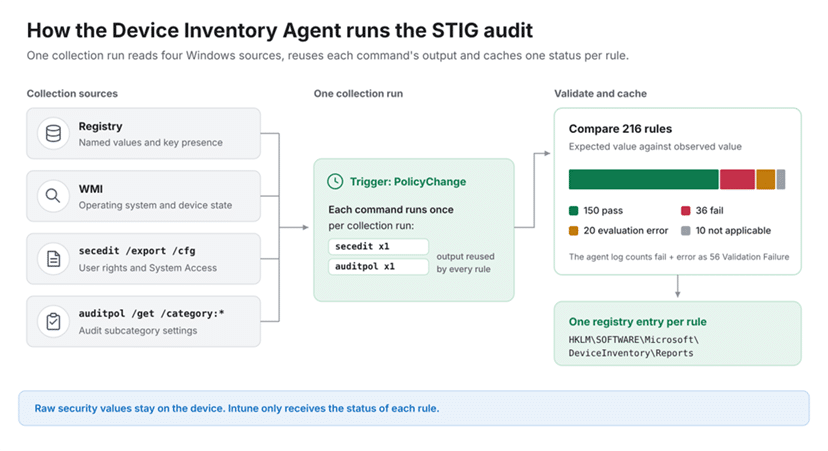
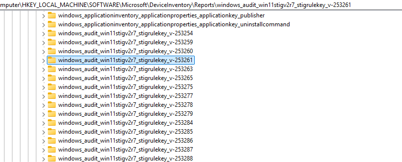
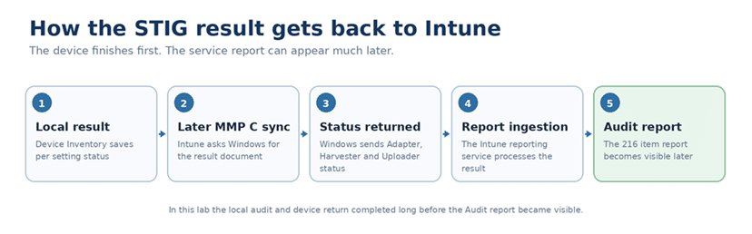
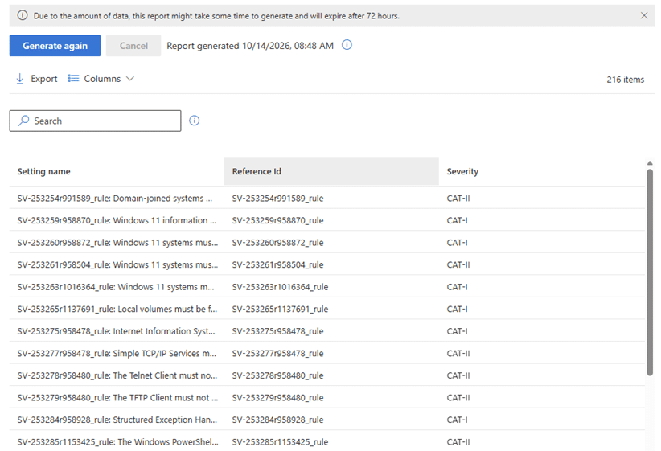
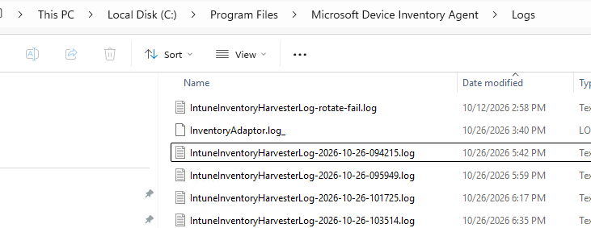

A security baseline normally tells Windows how it should be configured. The STIG Audit baseline asks a different question: how is this device configured right now?
It compares the device against the DISA benchmark and reports the results in Intune. It does not change the settings it checks. That makes it an assessment, not another hardening policy.
The feature is now showing up in commercial tenants too, including mine. Creating the profile is straightforward. I wanted to see what happened afterwards: how the audit reaches Windows, which component runs the checks, and how the results make their way back to Intune.
What is STIG?
STIG stands for Security Technical Implementation Guide. DISA, the Defense Information Systems Agency, publishes these guides to define security requirements for products such as Windows. The Windows 11 STIG covers areas including account policies, encryption, audit logging, services, user rights and security options.
Think of it as a set of checks against a defined security standard. Does the device meet the required configuration? If it does not, which requirement is missing? Rules have reference IDs and severity categories. CAT I is high severity, CAT II is medium and CAT III is low. Those references let you connect a finding in the report to the requirement it represents.
The automated assessment uses a SCAP benchmark, the machine readable content used to run the checks. Not every STIG requirement can be assessed automatically. Manual requirements still need a separate review.
What the Intune Stig baseline actually does
The baseline compares the expected configuration in the benchmark with the configuration found on the device. Windows performs the local evaluation, and Intune provides the resulting report.
DISA benchmark + Current Windows configuration
↓
Local STIG evaluation
↓
Intune Audit report
For example, a rule can check whether a required security setting is enabled. If the setting does not meet the requirement, the audit reports a finding. It does not enable the setting for you. Configuration changes still belong in Settings Catalog or another suitable management policy.
That is the distinction to keep in mind throughout this process: the audit checks Windows; it does not harden Windows.
Creating the STIG audit profile
In the Intune admin center, open Endpoint security → Security baselines and select Microsoft Windows 11 STIG SCAP Benchmark. Choose Create profile and give it a useful name, such as Windows 11 STIG audit.


The Configuration settings page is different from a normal baseline. There are no individual rules to choose or expected values to change. The profile enables auditing of the settings included in the baseline.
Add scope tags where needed, select the device groups under Assignments, and finish with Review + create. I would start with a small group so there are fewer devices and findings to follow during the first run.


Create the profile, assign devices, then open the Audit report. There are no individual audit rules to configure. Once the profile exists, open Audit report and select Generate. That is the admin setup. It is not a sign that the device has already finished the assessment.


The next part happens on Windows.
What happens after you created the Stig Audit?
The flow I captured was: Intune delivers the audit definition, Windows hands it to the Device Inventory Agent, the agent evaluates the rules, and Windows returns the status during a later management session.
The examples below come from separate lab captures. They show the same components and operations, but their timestamps should not be combined into one continuous run.


The full flow from profile assignment to the Audit report. The numbered headings below follow the same nine steps.
Steps 1 and 2: From STIG assignment to notification
In the delivery trace, Windows received a WNS notification. The DeviceManagement event log recorded the notification being parsed, followed by the start of an OMA DM management session with PushRouterOrigin 0x7. This was the MMP C path used in the capture.
The notification did not contain the STIG benchmark. It prompted Windows to contact Intune. The management session then retrieved the work waiting for the device.
That is the first separation: notifying the device is not the same as running the audit.
Step 3: WinDC accepts the audit STIG documents
The commands targeted Windows Declared Configuration, or WinDC. Two document paths were involved: one for the complete configuration and one for the inventory request.
./Device/Vendor/MSFT/DeclaredConfiguration/Host/Complete/Documents/<DocId>/Document
./Device/Vendor/MSFT/DeclaredConfiguration/Host/Inventory/Documents/<DocId>/Document
In this audit, the Complete document carried the signed audit definition. The Inventory document identified the setting reports Intune wanted Windows to return.
Microsoft documents that the Declared Configuration stack validates the document and processes it asynchronously. It can return control to the management session before the requested work has finished. So a successful response at this point means Windows accepted the document. It does not mean all STIG checks have completed.
Step 4: The Device Inventory Agent takes over
The next useful evidence was in InventoryAdaptor.log. The adaptor parsed the settings, connected to the Inventory Service and called NotifyPolicyChange. The captured operation completed successfully.
Parsed 216 Settings
Connecting to InventoryService pipe
NotifyPolicyChange call succeeded
Operation=SET Result=0x00000000 MIResult=0x00000000
The component evaluating the rules was the Microsoft Device Inventory Agent. WinDC delivered the audit work to it; the agent performed the collection and validation. [5]
That also explains why the name Inventory appears throughout the trace. This is not an app installation. The agent is collecting security configuration and comparing it with the audit definition.
Step 5: The local STIG collection runs separately
In one collection trace, about four minutes passed between the completed management command and the start of the collection. The harvester then recorded a PolicyChange trigger. [5]
Starting collection run due to trigger event PolicyChange
A request for results before that collection had finished could still read the previous cached state. Receiving the policy and evaluating it were separate operations. [5]


A separate device trace: policy acceptance, local collection and result retrieval happen at different times. These are capture timestamps, not fixed service intervals.
In that trace, pressing Sync did not immediately rerun secedit and auditpol. The management session read the cached result, while the Inventory Agent handled the collection separately. That is what the capture showed, rather than a promise about every possible trigger or agent version.
Step 5 continued: What the agent reads on Windows
The audit definition describes how each setting should be collected and validated. In the captured run, the agent used registry reads, WMI, a local security policy export and an audit policy query.


The four collection sources and the local status cache. The 36 fail / 20 error split is a local interpretation of the 56 validation failures in this capture, not a separate Intune report count.
Registry reads and WMI supplied Windows settings and device state. For local security policy, the agent invoked secedit. For advanced audit policy, it invoked auditpol:
secedit /export /cfg <temporary file>
auditpol /get /category:*
It did not start a new process for every rule that needed the same information. In this run, the agent reused cached command output. One secedit export and one auditpol query supplied the command based checks.
At the end, the audit portion of the log reported:
Audit: 150 Success, 56 Validation Failure, 10 Not Applicable
Those are the harvester’s categories for 216 processed settings. They are not a count of compliant devices. The Validation Failure entries included both failed comparisons and problems parsing or evaluating collected data. That distinction matters when troubleshooting. A rule finding a value that does not meet the benchmark is different from a rule that could not be evaluated reliably.
Step 6: Windows keeps the result until Intune asks for it
The device stores the status locally before it is returned to Intune. In this lab, the local report entries were under: HKLM\SOFTWARE\Microsoft\DeviceInventory\Reports


The STIG entries used the same setting identifiers seen in Graph, with status information for the adaptor, harvester and uploader. This is an observed implementation detail, not something administrators need to export or modify to use the baseline. The important part is that the result already exists on Windows. Intune can retrieve that cached status during a later management session.
Steps 7 and 8: The status returns through WinDC
The STIG return path in the capture was different from the agent’s normal hardware and application inventory upload. Intune requested the Declared Configuration inventory result document through the management channel.
GET ./Device/Vendor/MSFT/DeclaredConfiguration/Host/Inventory/Results/<DocId>/Document
The device returned a successful SyncML response and a payload containing the setting identifiers together with AdapterStatus, HarvesterStatus and UploaderStatus.
This is why I would not troubleshoot an empty STIG report solely by looking at the ordinary inventory upload. In the captured flow, the audit status came back through the WinDC result document. The device has now returned its result. There is still one more stage before it becomes useful in the portal.


Local status returns through the management channel. Intune reporting can make the data visible later.
Step 9: Give Intune reporting time
Returned to Intune does not mean immediately visible in the Audit report. The result still has to become available to the reporting service. Microsoft allows up to 24 hours for initial results; later updates can lag by one or two device checkin cycles.
In my portal test, I created the profile at 12:30 UTC on 13 October 2026. The report was still empty at 18:52 UTC. When I checked again the following morning, at 08:48 CEST on 14 October, it showed 216 items.
That is roughly 18 hours from profile creation to my populated report check, not proof of an 18 hour processing delay. I did not observe the exact moment the data became available. It appeared between the last empty check and the next morning’s check.


The Intune Audit report on 14 October 2026, showing 216 items. This screenshot establishes that the rule table populated; it does not show the device result details.
Generate again refreshes the report from the latest available reporting data. It does not start a new local audit or make a recent device result appear instantly. The practical point is simple: after Windows has returned the audit status, allow time for the data to become visible and accessible in Intune. An initially empty report is not, by itself, evidence that the device failed to run the audit.
Reading the Audit report
The summary lists each rule, its reference ID, severity and Success devices count. That count is for the individual check, not the whole baseline. Open a rule’s device count to inspect device results. Pass, Fail, Not applicable and Error have different meanings; Unknown means no result has been reported yet. The report does not display the underlying device value.
Use the findings to decide which configuration needs attention. The assessment tells you where to investigate; applying the appropriate configuration is a separate task.
One detail from this tenant is worth keeping separate from the setup instructions. Its active template exposed 216 settings and the report showed 216 items. Microsoft Learn still lists 197. The captured setting IDs reference Win11STIGV2R7, but I do not have a verified explanation for the count difference.
Where to look when the report is empty
Start with the profile’s Device assignment status. Then follow the device evidence: did Windows receive the work, did the adaptor hand it to the Inventory Service, and did the harvester run the checks?
The useful sources in this investigation were the DeviceManagement Enterprise Diagnostics Provider event logs, InventoryAdaptor.log, and IntuneInventoryHarvesterLog. The adaptor log showed the policy handoff.


The harvester log showed the collection and validation. The later management trace showed the result being returned.
Keep the policy ID with the evidence. Recreating a profile gives it a new ID, while a local snapshot can still contain status from an earlier evaluation. Do not assume an old cached result belongs to the profile currently open in the portal.
Once the device has returned a result for the policy you are checking, reporting latency is a separate consideration. Repeatedly pressing Generate cannot replace the device evaluation or the processing that follows it.
Create is the start, not the finish
The visible setup is short: create the STIG audit profile, assign devices and open the report. Underneath that, Windows receives the work, WinDC passes the audit definition to the Device Inventory Agent, and the agent checks the current configuration. A later management session returns the cached status.
The report comes afterwards. Keeping those stages separate makes it much easier to understand an empty table and to find the right logs when something genuinely goes wrong.
STIG Audit tells you how Windows compares with the benchmark. It does not change Windows, and finishing the local audit does not make the report appear immediately.